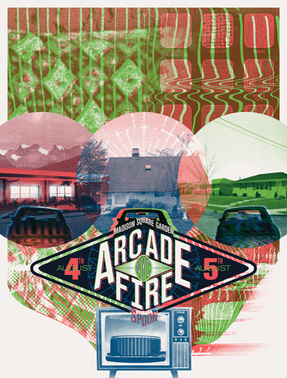
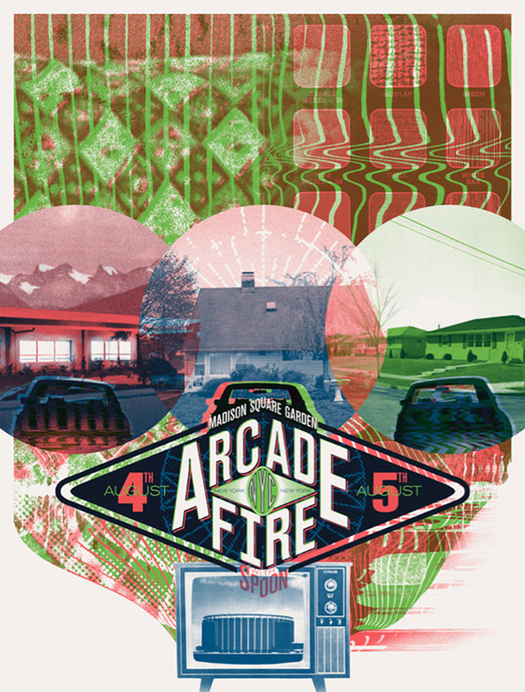

Arcade Fire Tour Posters
Designed by Ben LaFond and Dan Black, the new Arcade Fire tour posters are fantastic. From the color pallet to the design details they managed to visually capture the sound of the new album—The Suburbs.
Via Kistune Noir

Designed by Ben LaFond and Dan Black, the new Arcade Fire tour posters are fantastic. From the color pallet to the design details they managed to visually capture the sound of the new album—The Suburbs.
Via Kistune Noir